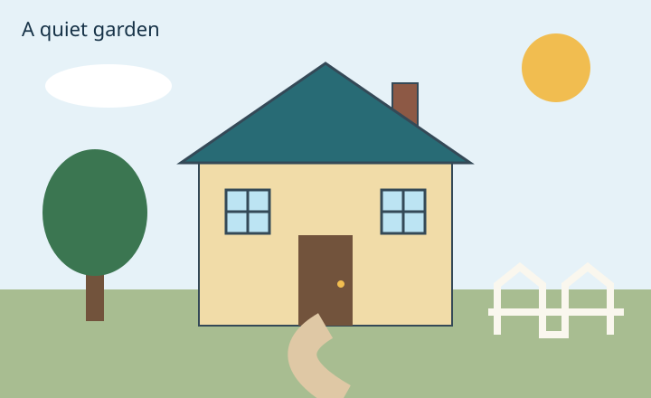

How does mean annual energy compare at 55 inches?
Loading KNIME output…
Mean energy and sample counts
Among the rounded-55-inch records, LCD (LED) has the highest mean annual energy. The comparison is descriptive, not causal.
A study in SVG & D3 · Weeks 04—06
Draw with coordinates. Compare with evidence. Explore TV energy through six visualisations and one shared filter.

01 / THE BUILDING BLOCKS SVG
Exercise 4.1 · SVG
The origin (0,0) is at the top left. x increases to the right; y increases downward. The canvas uses viewBox 0 0 720 440.

| SVG | Example | How to read it |
|---|---|---|
| rect | House walls | x=220, y=180; width=280, height=180 |
| circle | Sun | cx=615, cy=75; r=38 |
| ellipse | Cloud | cx=120, cy=95; rx=70, ry=24 |
| line | Fence rail | (540,345) to (690,345) |
| polygon | Roof | (200,180), (360,70), (520,180); automatically closed |
| polyline | Fence tops | Starts at (550,370), through (550,315), (575,295)…; remains open |
| path | Garden path | M360 360; Q300 395 380 440. Q uses control point (300,395) and endpoint (380,440). |
| text | Garden title | x=24, y=40 positions the start of the text baseline |
| g + translate | Two windows | Shared group: translate(250,210). The second window uses translate(172,0). Their top-left corners are (250,210) and (422,210). |
<g id="windows" fill="#bce4f3" stroke="#344957" stroke-width="3" transform="translate(250,210)"> <g><rect width="48" height="48" />…</g> <g transform="translate(172,0)">…</g> </g>
The initial browser capture and revised coordinate diagram document the drawing. Open an image to inspect the coordinates at full size. Captures are prepared after the classroom demonstration; they are not evidence of earlier classroom activity.


Exercise 4.3–4.7 · Binding, scales, labels
Loading CSV…
25 brands · Available registrations sold in Australia
Samsung has the largest registration count in this teaching snapshot. Counts describe catalogue registrations, not sales.
Source: tvBrandCount.csv included in 2026 TV Data.knwf, using the 15 February 2026 snapshot. The workflow keeps Available registrations sold in Australia, standardises brands and groups the records. Counts describe registrations, not sales.
Open the preserved practice example: select, style, append a paragraph and a rectangle . The practice code has its own page so it does not add extra shapes to the final chart.
Exercise 5 · Multi-chart
Loading KNIME output…
Among the rounded-55-inch records, LCD (LED) has the highest mean annual energy. The comparison is descriptive, not causal.
Loading KNIME output…
Medium screens account for 45.7% of Available Australian registrations in this dataset.
Loading data…
The supplied four-state average reaches its highest value in 2022: AUD 144.50/MWh.
TVs: 15 February 2026 snapshot, Available and sold in Australia; no expiry-date filter or deduplication. Means are sensitive to outliers. Electricity prices: ARE_Spot_Prices.csv supplied on Canvas, 1998–2024. Reuse licences for the teaching files have not been verified.
Exercise 6 · Interactivity
Select a point or record to inspect its values.
Source: Ex6_TVdata_withStar.csv from Exercise 6.1. Each row is a TV record in the teaching dataset, not a sale or measured household consumption. W6 TV Data.knwf references tv_2026_02_15.csv, although Canvas describes January 2026 data. The full range, including outliers, is retained. Points can overlap; filter by technology or use the record list. Star ratings are ordered ratings, not a linear ratio scale of energy consumption.